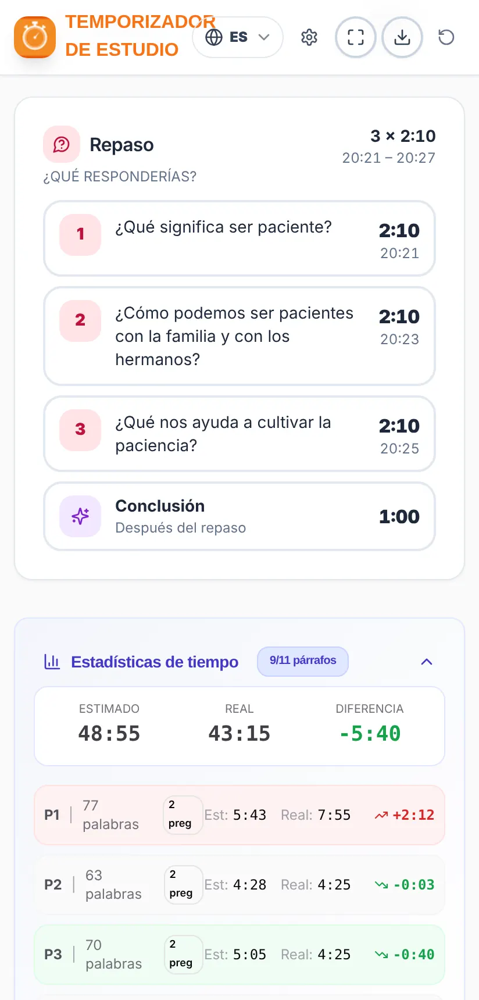

Manual de uso
Temporizador de Estudio
Cómo preparar y conducir el Estudio de La Atalaya a tiempo
Cómo preparar y conducir el Estudio de La Atalaya a tiempo
El Temporizador de Estudio ayuda al hermano que conduce el Estudio de La Atalaya a repartir bien el tiempo y terminar a la hora.
Cargas el artículo de la semana en PDF y la aplicación:
Aplicación no oficial. Es un proyecto gratuito e independiente. No es una publicación oficial ni tiene relación con jw.org ni con la organización de los Testigos de Jehová. El artículo se analiza en tu propio dispositivo: no se envía ni se guarda en ningún servidor.
Las imágenes de este manual usan un artículo de ejemplo inventado, no un artículo real de La Atalaya.
Instálala desde Google Play: busca “Temporizador de Estudio” o abre este enlace:
play.google.com/store/apps/details?id=com.comangelo.temporizadorestudio
Todavía no está en el App Store, pero funciona igual desde la web y se puede poner en la pantalla de inicio:
Abre temporizador-estudio.vercel.app en el navegador. En Chrome y Edge puedes instalarla como aplicación desde el icono de instalar de la barra de direcciones.
Actualizaciones: cuando hay una versión nueva, la aplicación muestra el aviso “Hay una nueva versión de la app disponible” con el botón Actualizar. Nunca se actualiza sola en mitad de un estudio.

De arriba abajo encontrarás:
La tarjeta “Artículo de esta semana” muestra la semana actual (por ejemplo, 9–15 de noviembre de 2026) y el número de La Atalaya que la contiene. Con las flechas ‹ › puedes elegir otra semana.
La Atalaya se descarga en el idioma de la aplicación. Si la aplicación está en español, se descarga la edición en español; si está en inglés, la edición en inglés, y así con todos los idiomas. Para descargar otro idioma, cambia primero el idioma de la aplicación (apartado 14). En portugués, se descarga la edición de Portugal o la de Brasil, según lo que hayas elegido.
La aplicación guarda una copia de la revista. Las semanas siguientes del mismo número se abren directamente con “Abrir el artículo de esta semana”, sin volver a descargar nada. Las revistas guardadas se borran solas 3 meses después de su última semana.
En el ordenador también puedes arrastrar el PDF a la zona de abajo o elegir la carpeta donde guardas las revistas, y la aplicación las encontrará sola.
¿Dice que la revista todavía no está publicada? jw.org publica cada número unas semanas antes. Si eliges una semana muy lejana, puede que aún no esté disponible.


Al cargar el artículo verás:
En la tarjeta del plan, el aviso “Comentarios: X s por pregunta” te dice cuánto tiempo hay de media para responder cada pregunta.
Si el artículo es demasiado largo para el tiempo elegido, aparece el aviso “No cabe” con lo que falta. Puedes alargar la duración o elegir una lectura más rápida en Ajustes.

Cada párrafo ocupa una línea con su número, su tiempo previsto y la hora aproximada a la que debería terminar. Las etiquetas de colores avisan de lo que hay que tener en cuenta:
| Etiqueta | Qué significa |
|---|---|
| Santiago 5:7, 8 | Hay un texto bíblico para leer. Se muestra la cita concreta. |
| Imagen | La pregunta remite a una imagen del artículo (“Vea también la imagen”). |
| Nota | Hay una nota a pie de página que comentar. |
| ★ Idea importante | La pregunta menciona un recuadro o una idea destacada entre comillas. |
Toca un párrafo para abrirlo. Verás las palabras, el tiempo de lectura, su pregunta y, si es largo, el tiempo extra para más comentarios. Desde ahí:
Los párrafos que comparten pregunta (por ejemplo, “5, 6.”) se tratan como un grupo, y el botón Siguiente salta el grupo entero.
Recomendado: durante el estudio, abre el modo presentación (apartado 9). Aquí se explica el funcionamiento general, que es el mismo en las dos vistas.
En el móvil, los botones principales están siempre abajo, en la barra inferior:


En la tarjeta del plan, arriba, puedes pausar y reanudar el estudio. El aviso “En m:ss debe concluir” te recuerda cuánto falta para la hora de fin.
La pantalla no se apaga mientras el estudio está en marcha, para que no tengas que tocar el móvil. Al terminar, el teléfono vuelve a apagar la pantalla como siempre.
La tarjeta de lo que está en curso (párrafo, introducción, pregunta de repaso o conclusión) cambia de color según el tiempo que lleva:
| Color | Cuándo | Qué hacer |
|---|---|---|
| EN TIEMPO | Hasta el tiempo previsto. | Todo bien: sigue así. |
| PRÓRROGA | Se ha pasado de su tiempo, pero no más de un 30 %. | Ve cerrando los comentarios. |
| EXCEDIDO | Más de un 30 % por encima de lo previsto. | Pasa al siguiente párrafo. |


En los últimos 5 minutos del estudio los párrafos y las preguntas de repaso no tienen prórroga: pasan directamente de verde a rojo, para no comerse el tiempo del final. La conclusión conserva siempre su prórroga.
Si un tramo se alarga, no pasa nada: al pulsar Siguiente, la aplicación vuelve a repartir el tiempo que queda entre lo que falta, para terminar a la hora.
Es la forma recomendada de conducir el estudio. El modo presentación evita distracciones: solo muestra lo que necesitas, los colores verde, amarillo y rojo te dicen de un vistazo en qué punto estás y cómo vas de tiempo, y los botones Siguiente y Comentario son grandes y fáciles de encontrar y pulsar.
Pensado para dejar el móvil o la tableta en el atril o la plataforma: todo grande y fácil de ver de un vistazo. Se abre con el botón ⛶ de la barra inferior y se cierra con la ✕ (o la tecla Esc en el ordenador).
Arriba muestra la hora actual, la hora a la que termina y el tiempo restante, con una barra de progreso. En el centro, lo que está en curso con su cronómetro y su color, y las etiquetas (por ejemplo, Leer Santiago 5:7, 8). Abajo, los botones Comentario y Siguiente.
Hay tres diseños. Se cambian con el botón de diseño ▦ (arriba a la derecha) o en Ajustes → Pantalla:


En el modo presentación, el botón grande va avanzando solo por el estudio: Iniciar estudio → Pasar al párrafo 1 → Siguiente párrafo → Pregunta de repaso → Ir a la conclusión → Finalizar estudio. En los últimos 5 minutos aparece el aviso de que hay que terminar.
Ejemplo (el artículo de las imágenes): en un estudio de 60 minutos con 11 párrafos y 21 preguntas (18 de los párrafos y 3 de repaso), con el tiempo por respuesta en 35 segundos, unos 7 minutos son de lectura, 2 minutos de introducción y conclusión, y unos 51 minutos de comentarios, lo que da algo más de 2 minutos por pregunta.
Toca ⚙ arriba a la derecha. Los ajustes se guardan en tu dispositivo y están organizados en cuatro pestañas:


| Pestaña | Qué puedes cambiar |
|---|---|
| Tiempo | Duración del estudio (hasta 60 min). Duración de la introducción y de la conclusión (de 30 s a 3 min). Visita del superintendente de circuito. |
| Lectura | Velocidad de lectura del lector: Lento (150), Normal (180) o Rápido (210 palabras/min). Tiempo por respuesta (de 30 a 90 s; también se usa para cada texto, imagen, nota o idea importante). Párrafos largos o agrupados: Sin extra, Normal o Más comentarios. |
| Avisos | Sonido y vibración (con botones para probarlos). Aviso de párrafo excedido, aviso de “faltan 5 minutos” y hasta dos avisos antes del repaso. |
| Pantalla | Idioma, tema claro u oscuro (con cuatro variantes de oscuro) y el diseño del modo presentación. |
Si cambias la velocidad de lectura o el tiempo por respuesta con el estudio en marcha, se aplicará en el próximo estudio.
Comprueba que el móvil no está en silencio si quieres oír los avisos. La vibración funciona en Android; en iPhone depende del navegador.

La semana de la visita, activa el interruptor “Visita del superintendente de circuito” en la pantalla de inicio (o en Ajustes → Tiempo). El estudio pasa a durar 30 minutos y no se leen los párrafos: se mantienen las preguntas, los textos bíblicos, las imágenes y el repaso. Recuerda desactivarlo después de la visita.

La aplicación funciona en español, inglés, alemán, italiano, francés, portugués, polaco, neerlandés y rumano. Cámbialo con el botón del globo, arriba, o en Ajustes → Pantalla. Al cambiar el idioma:
Este manual también está disponible en todos esos idiomas: usa los botones de idioma de la parte de arriba.

Las Estadísticas de tiempo comparan lo estimado con lo real en todo el estudio y en cada párrafo, con la diferencia en verde (más rápido) o rojo (más lento) y los comentarios marcados. Te sirven para ver qué partes se alargaron y ajustar la próxima vez (por ejemplo, la velocidad de lectura).
Con el botón de exportar ⬇ de la barra superior puedes guardar el plan del estudio como imagen (PNG) o como PDF, para imprimirlo o compartirlo.
Para preparar otro estudio, usa el botón de empezar de nuevo ↻.